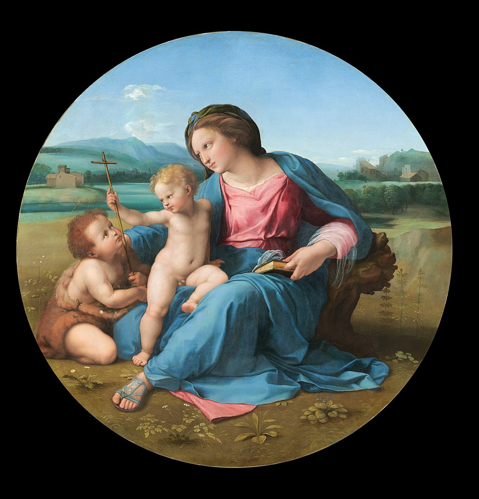

<head>
<meta charset="UTF-8" />
<meta name="keywords" content="drawing, painting" />
<meta name="description" content="drawings by Sunjy" />
<title>Sunjy</title>
<link rel="shortcut icon" type="image/x-icon" href="../../mImages/mCommon/favicon.ico" media="screen" />
<link rel="stylesheet" type="text/css" href="../../mCsses/mCommon/mCssA.css" />
<link rel="stylesheet" type="text/css" href="../../mCsses/mCommon/mCssB.css" />
<link rel="stylesheet" type="text/css" href="../../mCsses/mCommon/mCssC.css" />
<link rel="stylesheet" type="text/css" href="../../mCsses/mCommon/mCssD.css" />
<link rel="stylesheet" type="text/css" href="../../mCsses/mContent/mCssA.css" />
<link rel="stylesheet" type="text/css" href="../../mCsses/mContent/mCssB.css" />
<link rel="stylesheet" type="text/css" href="../../mCsses/mContent/mCssC.css" />
<link rel="stylesheet" type="text/css" href="../../mCsses/mContent/mCssD.css" />
</head>
<script type="text/javascript" src="../../mScripts/mContent/mContentAA.js" /></script>
<script type="text/javascript" src="../../mScripts/mContent/mContentAB.js" /></script>
<script type="text/javascript" src="../../mScripts/mContent/mContentAC.js" /></script>
<script type="text/javascript" src="../../mScripts/mContent/mContentAD.js" /></script>
<script type="text/javascript"></script> 
<script type="text/javascript">
document.write('<div class="mImgAbsolute"></div>');
/*
document.write('<p class="mFontSizeBColor" />From a white paper...</p>');
document.write('<table class="center"><tr><td>');
document.write('');
document.write('</td></tr></table>');
*/
</script>


<script type="text/javascript">
document.write('<p class="mFontSizeBColor" />The Alba Madonna</p>');
document.write('<p class="mFontSizeSColor" />By Raphael. “The Alba Madonna” depicts three figures all looking at the cross; they represent the Madonna with the Christ Child and Saint John the Baptist as a child. The figures are grouped to the left in the round composition.<br><br>The outstretched arm of the Madonna and the resting elbow on the stump with her enveloping cloak balance the group image.<br><br>The painting is full of symbolism with Madonna shown wearing a blue mantle, set against a red dress, and with her right leg lying along a diagonal.<br><br>The blue symbolizes the church and the red Christ’s death, with the Madonna uniting the Church with Christ’s sacrifice. In her lap, she holds Christ as he stretches out to touch the cross carried by John.<br><br>Raphael painted this painting while he was in Florence and showed a landscape backdrop that places the scene in a Tuscan setting.<br><br>Saint John the Baptist was the patron of Florence, making his presence here in a Florentine environment, which was symbolic and relevant to his audience.</p>');
document.write('<table class="center" /><tr><td>');
document.write('<br>The outstretched arm of the Madonna and the resting elbow on the stump with her enveloping cloak balance the group image.<br><br>The painting is full of symbolism with Madonna shown wearing a blue mantle, set against a red dress, and with her right leg lying along a diagonal.<br><br>The blue symbolizes the church and the red Christ’s death, with the Madonna uniting the Church with Christ’s sacrifice. In her lap, she holds Christ as he stretches out to touch the cross carried by John.<br><br>Raphael painted this painting while he was in Florence and showed a landscape backdrop that places the scene in a Tuscan setting.<br><br>Saint John the Baptist was the patron of Florence, making his presence here in a Florentine environment, which was symbolic and relevant to his audience." />');
document.write('</td></tr></table>');
</script>


